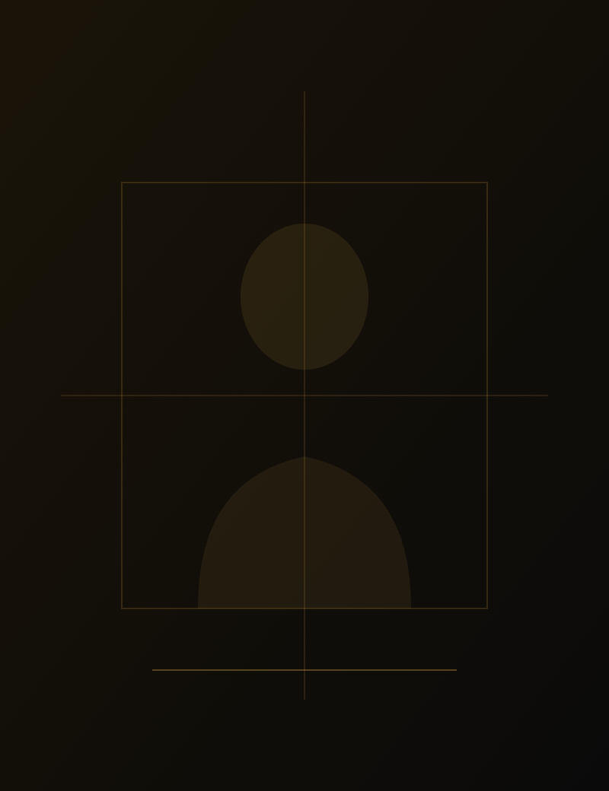

Nos formations
Explorez nos
Explorez nos
programmes.
Des parcours ancrés dans la réalité terrain,
accessibles et finançables.
SAF Formation accompagne professionnels et entreprises dans le développement de compétences concrètes, immédiatement opérationnelles.
La certification qualité a été délivrée au titre des catégories : Action de formation, VAE, Bilan de compétences.
Des parcours ancrés dans la réalité terrain,
accessibles et finançables.

"La formation n'est efficace que lorsqu'elle part de la réalité du terrain."
Safa allie une formation académique de haut niveau (Master en ingénierie de la formation, niveau 7) à plus d'une décennie d'accompagnement direct auprès de professionnels et d'entreprises.
Découvrir son parcours